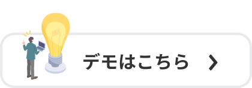

BO-AutoBot
概要
MT4チャートに表示されるサイン(矢印等)を検知し、
ザオプションにて自動エントリーを実施します。
内容
- サイン検知用インジケーター
- ザオプション自動エントリーツール
- 導入手順書
配送方法
決済確認後、メールでダウンロードリンクをお送りします。
販売価格
¥20,000（税込）
※買い切り（追加費用なし）
| 対応項目・取引業者 | ザオプション |
|---|---|
| 判定時間 | 取引サイトに依存 |
| 通貨ペア | ザオプション |
| 検知可能なサイン | バッファ型、オブジェクト型 ※サインの型が分からない場合は、個別対応可能です。フォームよりお問い合わせください。 |
| 推奨動作環境 | OS：Windows10(64bit) CPU：2.6GHz メモリ：4GB |
| その他 | ・エントリー金額変更可能 ・アラート通知可能 ・メール通知可能 ・マーチン可能（2回まで） ・エントリー停止時間の設定（経済指標の前後で停止できます） ・2種類のエントリーモード（サイン点灯→即エントリー／サイン点灯のまま足確定→エントリー） ・フライングエントリー可能（ローソク足確定数秒前のエントリー） |